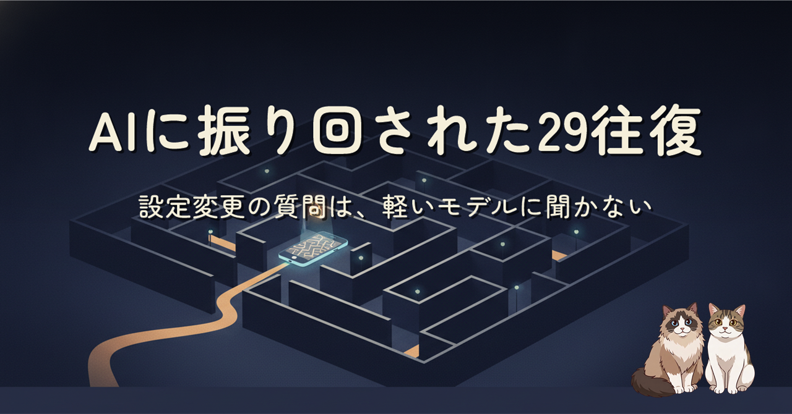
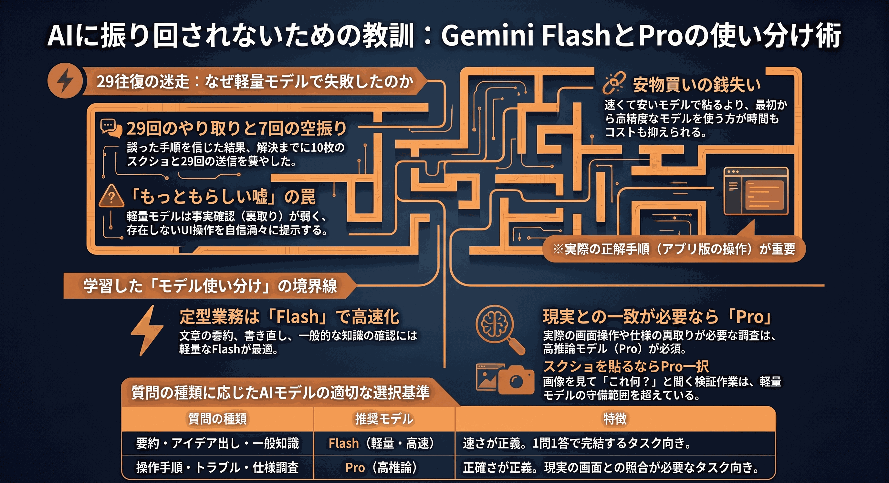
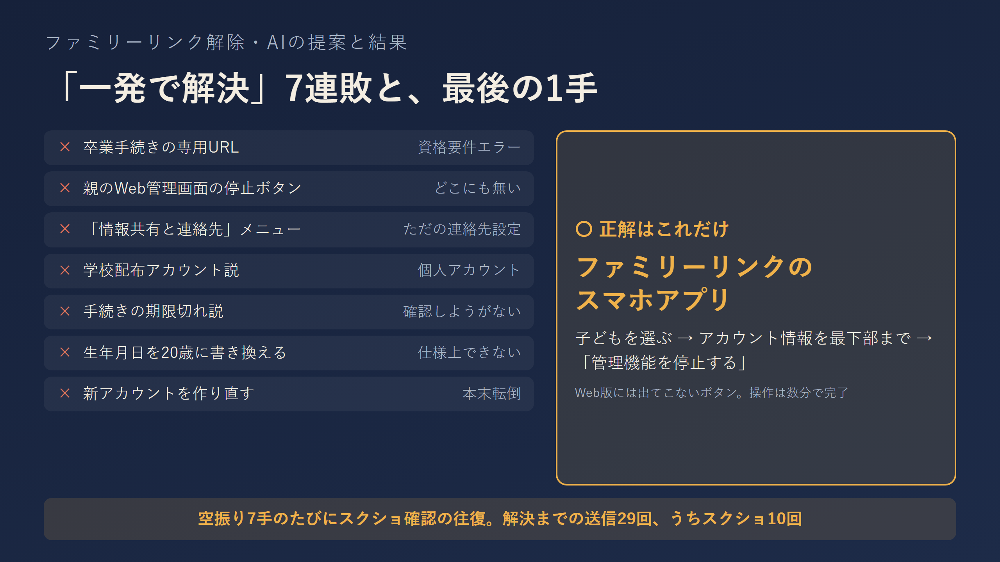
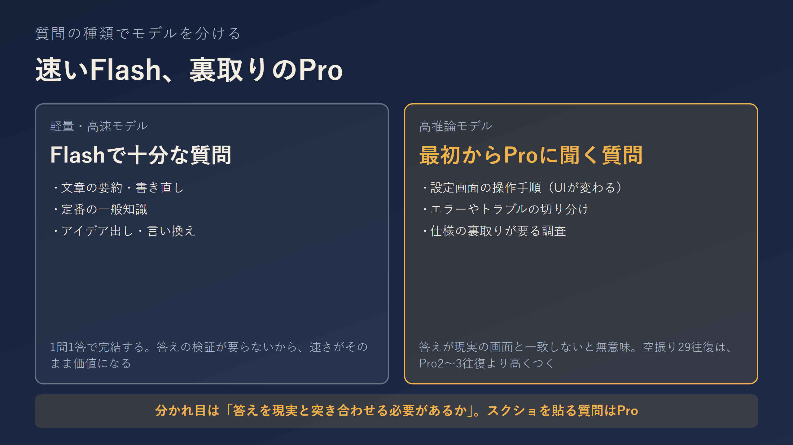

中2の娘がNotebookLMを勉強に使いたいと言った。それだけの話のはずが、ファミリーリンクの13歳ロック解除でGemini Flashの「一発で解決します」に7連敗。解決までのやり取りは29往復、正解はスマホアプリの一番下にある1ボタンでした。設定変更やUIが絡む質問を軽量モデルに聞くと、往復時間もトークンも余計にかかる、という教訓の話です。

軽量モデル（Flash系）は「それっぽい答えを速く返す」ことに寄っていて、頻繁に変わるUIの現状を裏取りせずに手順を組み立ててくる。間違いを指摘すると謝って、また別の「一発で解決」を出す。1回の応答は安くても、今回のように空振りで29往復すれば高推論モデル（Pro）の2〜3往復より時間もトークンも高くつきます。分かれ目は「答えが現実の画面と一致していないと意味がない質問かどうか」。スクショを貼る質問は、最初からProに投げる。

